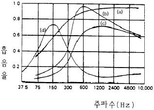
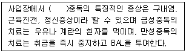
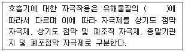

산업위생관리기사 (2003-08-10 기출문제)
1과목: 산업위생학개론
1. 산업보건학에 있어 그 분야 및 학문은 다양하다. 산업보건학의 분야와 비교적 거리가 먼 학문은?
- 산업의학
- 산업위생학
- 산업공학
- 인간공학
(정답률: 50%)

2. 의학의 사회성 속에서 노동자의 건강보호를 주창한 근대병리학의 시조로 불리우고 있는 사람은?
- Rudolf Virchow
- Galen
- Pettenkoffer
- Ramazzini
(정답률: 알수없음)
3. 작업강도를 평가하는데 일반적 기준이 되는 것은?
- 열량 소비량
- 산소 소비량
- 작업 대사량
- 기초 대사량
(정답률: 알수없음)
4. 피로는 그 정도에 따라 보통 3단계로 나눌 수 있는데 피로도가 증가하는 순으로 옳게 배열된 것은?
- 곤비상태→ 보통피로→ 과로
- 보통피로→ 과로→ 곤비상태
- 보통피로→ 곤비상태→ 과로
- 곤비상태→ 과로→ 보통피로
(정답률: 70%)
5. 심리학적 적성검사 중에서 기능검사에 해당되는 것은?
- 직무에 관련된 기본지식과 숙련도, 사고력 등의 검사
- 언어, 기억, 추리, 귀납 등에 대한 검사
- 수족협조능, 운동속도능, 형태지각능 등에 대한 검사
- 성격, 태도, 정신상태에 대한 검사
(정답률: 알수없음)
6. 바람직한 교대제의 관리로 부적당한 것은?
- 야근 연속(작업)은 2 ~ 3일이 적당하다.
- 야근 후 다음 반으로 가는 간격은 최저 24시간을 가지도록 하여야 한다.
- 2교대면 최저 3조의 정원을 그리고 3교대면 4조편성으로 한다.
- 야근 교대시간은 상오 0시 이전에 하는 것이 좋다.
(정답률: 알수없음)
7. 고혈압 신체조건의 작업자가 근무할 수 있는 작업으로 가장 적당한 것은?
- 정밀작업
- 한냉작업
- 고온작업
- 고기압 작업
(정답률: 64%)
8. 산업재해의 발생상황을 나타내는 지수 중에서 연근로시간수에 대한 손실작업일수의 비율로 표시하는 것으로 가장 알맞는 것은?
- 빈도율
- 강도율
- 도수율
- 건수율
(정답률: 80%)
9. 다음 중 우리나라 산업재해 보상 보험급여의 종류와 가장 거리가 먼 것은?
- 요양급여
- 장해급여
- 장의비
- 재활급여
(정답률: 알수없음)
10. 산업피로 증상으로 알맞지 않은 것은?
- 혈압은 처음에는 높아지다가 나중에 오히려 떨어지며 맥박이 빨라진다.
- 체온은 처음에는 높아지다가 나중에 떨어진다.
- 혈당치가 높아지고 젖산, 탄산이 증가한다.
- 호흡이 빨라지고 혈액중 CO2의 량이 증가한다.
(정답률: 알수없음)
11. 미국산업위생학회(AIHA)는 산업위생사의 3가지 기능인인지(recognition), 평가(evaluation), 대책(control)에 한가지를 더 추가하였는데 이는 무엇인가?
- 예측(anticipation)
- 협조(cooperation)
- 윤리(ethics)
- 책임(responsibility)
(정답률: 알수없음)
12. 인간공학이 활용되는 대상과 가장 거리가 먼 것은?
- 작업공간
- 작업시간
- 작업방법
- 작업조직
(정답률: 알수없음)
13. 작업대사율(RMR)이 4인 작업에서의 실동율(實動率)은? (단, 일본의 사이또와 오시마 이론 기준)
- 65%
- 75%
- 85%
- 95%
(정답률: 알수없음)
14. 공장기계를 설치할 경우 인간공학의 활용단계로 해당되지 않는 것은 ?
- 준비단계
- 선택단계
- 적용단계
- 검토단계
(정답률: 알수없음)
15. 다음은 전신피로의 정도를 평가하기 위하여 맥박을 측정한 결과이다. 심한 전신피로 상태라고 판단되는 경우는?
- HR30-60 = 116, HR150-180 = 102, HR60-90 = 108
- HR30-60 = 114, HR150-180 = 92, HR60-90 = 118
- HR30-60 = 110, HR150-180 = 95, HR60-90 = 108
- HR30-60 = 107, HR150-180 = 89, HR60-90 = 101
(정답률: 57%)
16. 주요재해와 유사재해의 비율로 적절한 것은? (단, 하인리히(Heinrich) 학설 기준, 주요재해:유사재해)
- 1 : 500
- 1 : 300
- 1 : 50
- 1 : 30
(정답률: 알수없음)
17. 전신피로를 유발하는 생리학적 원인으로 적절한 것은?
- 산소공급
- 혈중 포도당 농도 증가
- 근육 내 글리코겐량의 감소
- 호흡량 증가
(정답률: 47%)
18. 역사상 최초로 기록된 직업병은?
- 납중독
- 수은중독
- 아연중독
- 진폐증
(정답률: 알수없음)
19. 유해물질의 급성중독에 있어서의 유해물질농도(C) 와 폭로시간(t)에 의한 인체피해 등의 유해물질지수(K)의 관계를 나타내는 양-반응관계식은?
- K = C × t
- K = C / t
- K = 2C + t
- K = C / 2t
(정답률: 82%)
20. 건설업의 경우, 재해건수 비율이 가장 높은 위험조건은?
- 시설결함
- 위험방지의 미비
- 위험한 작업방법 및 공정
- 환경위험
(정답률: 알수없음)
2과목: 작업위생측정 및 평가
21. 어느공장에 ethlylether 30%(TLV :1200㎎/m3),ethylacete20%(TLV :1400㎎/m3) 및 heptane 50%(TLV :1600㎎/m3)의 중량비로 조성된 용제가 증발되어 작업환경을 오염시킬 경우 이 혼합물의 허용농도는?
- 약 1420㎎/m3
- 약 1480㎎/m3
- 약 1510㎎/m3
- 약 1530㎎/m3
(정답률: 알수없음)
22. 공기 중 석면시료분석에 가장 정확한 방법으로 석면의 감별분석이 가능하나 값이 비싸고 분석시간이 많이 소요되는 석면의 측정방법은?
- 위상차현미경법
- 직독식법
- 전자현미경법
- 편광현미경법
(정답률: 알수없음)
23. 작업환경 시료용액 중에서 배위결합에 의한 착체생성반응을 이용하여 시행하는 적정을 착화적정이라 한다. 그 중 금속착체의 생성반응을 이용하는 적정은?
- 침전적정법
- 킬레이트적정법
- 중화적정법
- 산화환원적정법
(정답률: 알수없음)
24. 다음의 내용 중 작업환경 측정 목적에 관한 설명으로 알맞지 않는 것은?
- 환기시설을 가동하기 전과 후에 공기 중 유해물질농도를 측정하여 환기시설의 성능을 평가한다.
- 근로자의 노출 수준을 직접적 방법으로 파악한다.
- 근로자의 노출이 법적 기준인 허용농도를 초과하는지의 여부를 판단한다.
- 역학조사시 근로자의 노출량을 파악하여 노출량과 반응과의 관계를 평가한다.
(정답률: 24%)
25. 작업환경 측정을 위한 시료채취목적과 가장 거리가 먼 것은?
- 최대의 오차범위내에서 최대의 시료수를 가지고 최대의 근로자를 보호한다.
- 과거의 노출농도가 타당한지를 확인한다.
- 작업공정, 물질, 노출요인의 변경으로 인해 근로자에 대한 과다한 노출의 가능성을 최소화한다.
- 유해물질에 대한 근로자의 허용기준 초과여부를 결정한다.
(정답률: 알수없음)
26. 갱내작업장에서의 측정대상 항목으로 가장 거리가 먼 것은?
- 이산화탄소가스
- 일산화탄소가스
- 메탄가스
- 기온
(정답률: 알수없음)
27. 현장(field)에서 사용하기 쉬운 분진측정법으로 부유분진을 기기내에 통과시키면서 광을 투사하여 분진에 의한 산란광을 광전자증배관에 받아 광전류를 적분하여 이 광전류와 시간의 곱이 일정치에 도달하면 하나의 전기적펄스를 발생하도록 한 장치는?
- 광전자포집 분진계
- 여지 분진계
- 광전자흡수 분진계
- 디지탈 분진계
(정답률: 20%)
28. 가스상물질에 대한 시료채취방법인 순간시료채취방법을 사용할 수 없는 경우와 가장 거리가 먼 것은?
- 오염물질의 농도가 시간에 따라 변할 때
- 공기중 오염물질의 농도가 낮을 때
- 근로자에 대한 폭로시간이 일정하지 않을 때
- 시간가중평균치를 구하고자 할 때
(정답률: 알수없음)
29. 사염화탄소(CCl4)를 분석하고자 할 때, 가스크로마토그래피의 감도가 가장 높은 검출기는?
- 불꽃이온화검출기(FID)
- 질소인검출기(NPD)
- 전자포획검출기(ECD)
- 불꽃광전자검출기(FPD)
(정답률: 28%)
30. 호흡성 먼지를 채취하기 위하여 사이클론과 여과지가 연결된 개인시료채취펌프의 채취유량으로 가장 적절한 것은?
- 0.7L/min
- 1.7L/min
- 2.7L/min
- 3.7L/min
(정답률: 알수없음)
31. 섬유상여과지에 관한 설명으로 틀린 것은?
- 막여과지에 비하여 비싸다.
- 막여과지에 비하여 물리적 강도가 강하다.
- 막여과지에 비하여 흡습성이 적다.
- 막여과지에 비하여 열에 강하고 과부하에서도 채취효율이 높다.
(정답률: 17%)
32. 기기내의 알콜이 위의 눈금에서 아래눈금까지 하강하는 데 소요되는 시간을 측정하여 기류를 간접적으로 측정하는 기기는?
- 열선 풍속계
- 카타 온도계
- 아스만 통풍계
- 액정 풍속계
(정답률: 알수없음)
33. 산소농도측정에 관한 설명으로 틀린 것은?
- 우물 등 깊은 장소의 산소농도를 측정할 때에는 공기가 새지 않는 고무호스나 폴리염화비닐제의 채기관을 사용하여야 한다.
- 채기관엔 0.1m의 눈금을 표시하여 깊이를 동시에 측정할 수 있어야 한다.
- 측정시 공기를 채집할 때에는 채기관의 내부용적을 미리 산출하여 채기관의 공기를 완전히 치환한 후 채기하여야 한다.
- 채기관의 내부용적(mm3)= π × r2 × L 이다.( π :원주율r :반경(mm), L: 채기관의 길이(mm))
(정답률: 25%)
34. 유리규산을 채취하여 X-선 회절법으로 분석하는데 적절 하고 6가크롬 그리고 아연화합물의 채취에 이용하며 수분에 영향이 크지 않아 공해성 먼지, 총먼지 등의 중량분석을 위한 측정에 사용하는 막여과지는?
- MCE 막여과지
- PVC 막여과지
- PTFE 막여과지
- 은 막여과지
(정답률: 알수없음)
35. 인조피혁을 제조하는 사업장에서 DMF를 측정하기 위하여 폭로시간을 조사한 결과 1일 10시간 이었다. DMF의 노출기준은 10ppm이다. Brief와 Scala의 보정 방법을 이용하여 노출기준을 보정한 값은?
- 7ppm
- 8ppm
- 9ppm
- 12ppm
(정답률: 알수없음)
36. 0℃, 1기압인 작업장에서 50ppm의 톨루엔(Toluene)은 몇 ㎎/m3인가? (단, Toluene의 분자량 : 92)
- 133㎎/m3
- 188㎎/m3
- 2⑤㎎/m3
- 220㎎/m3
(정답률: 20%)
37. 작업환경의 저온 측정기기와 측정시간기준으로 가장 알맞는 것은?
- 섭씨 영하 20도까지 측정할 수 있는 온도계, 5분이상
- 섭씨 영하 20도까지 측정할 수 있는 온도계, 25분이상
- 섭씨 영하 30도까지 측정할 수 있는 온도계, 5분이상
- 섭씨 영하 30도까지 측정할 수 있는 온도계, 25분이상
(정답률: 알수없음)
38. 어느 작업장이 dibromoethane 10ppm(TLV:20ppm), Carbon tetrachloride 5ppm(TLV:10ppm) 및 dichloroethane 20ppm(TLV:50ppm)으로 오염되었을 경우 평가결과는? (단, 이들은 상가작용을 일으킨다고 가정함)
- 허용기준초과
- 허용기준초과 않음
- 허용기준과 동일
- 판정불가능
(정답률: 알수없음)
39. 입자상 물질을 채취하는 방법 중 원심력에 의한 호흡성먼지의 채취에 사용되는 사이클론이 충돌기에 비해 갖는 장점과 가장 거리가 먼 것은?
- 사용이 간편하고 경제적이다.
- 호흡성 먼지에 대한 자료를 쉽게 얻을 수 있다.
- 충돌기에 비해 시료의 되튐으로 인한 손실염려가 없다.
- 입자의 질량크기분포에 대한 자료를 얻을 수 있다.
(정답률: 알수없음)
40. '1차표준'에 관한 내용으로 틀린 것은 ?
- 물리적 크기에 의해서 공간의 부피를 직접 측정할 수 있는 기구를 말한다.
- 펌프의 유량을 보정하는 데 '1차 표준'으로서 비누거품미터가 가장 널리 사용된다.
- 유속측정용 Wet-test미터, Rota미터, Orifice미터가 대표적으로 사용된다.
- 2차표준기기는 1차표준기기를 이용하여 보정해야 한다.
(정답률: 70%)
3과목: 작업환경관리대책
41. 일반 실내공기의 환기지표로 CO2 농도를 이용한다. 일정기적을 갖는 작업장내에서 매시간 Mm3의 CO2가 발생할 때 필요환기량(m3/hr) 공식은? (단, M = CO2 발생량(m3/hr), Cs= 실내 CO2 기준농도(%), Co= 실외 CO2 농도(%))
- [(Cs-Co)/M]x 100
- [M/(Cs-Co)] x 100
- (Cs/Co) x M x 100
- (Co/Cs) x M x 100
(정답률: 20%)
42. 덕트합류시 균형유지방법 중 댐퍼를 이용한 균형유지법에 관한 설명이 아닌 것은?
- 시설설치 후 변경에 유연하게 대처가능
- 최대 저항경로 선정이 잘못되어도 설계시 쉽게 발견할 수 있음
- 최소유량으로 균형유지 가능
- 시설 설치시 공장 내 방해물에 따른 약간의 설계변경이 용이함
(정답률: 알수없음)
43. 고열 오염원에 레시버식 캐노피형 후드를 설치하고자 한다. 열상승 기류량이 10sm3/min, 누입 한계유량비가 2.5, 누출 안전계수가 8이라면 소요풍량은?
- 190m3/min
- 200m3/min
- 210m3/min
- 220m3/min
(정답률: 8%)
44. 송풍기의 성능곡선은 어떤 변수를 이용하여 나타낸 것인가?
- 송풍기 전압, 축동력, 효율, 유량
- 송풍기 정압, 축동력, 효율, 유량
- 송풍기 동압, 축동력, 효율, 유속
- 송풍기 전압, 축동력, 효율, 유속
(정답률: 알수없음)
45. 작업환경내의 공기를 치환하기 위해 전체 환기법을 사용할 때의 조건으로 맞지 않는 것은?
- 배출원에서 유해물질 발생량이 적어 국소배기로 환기하면 비경제적일 때
- 유해물질의 독성이 작을 때
- 동일 작업장내에 배출원이 고정성일 때
- 오염물질이 증기나 가스일 때
(정답률: 알수없음)
46. 1시간에 2ℓ 의 MEK가 증발되어 공기를 오염시키는 작업장이 있다. K치를 6, 분자량을 72.06, 비중을 0.8⑤, 허용기준을 200ppm이라 할 때 이 작업장의 오염물질을 전체 환기 시키기 위하여 필요한 환기량(m3/min)은?
- 약 210(m3/min)
- 약 240(m3/min)
- 약 270(m3/min)
- 약 290(m3/min)
(정답률: 알수없음)
47. 작업환경관리 대책중 '대체'의 관리방법과 가장 거리가 먼 것은?
- 시설변경
- 위치변경
- 공정변경
- 물질변경
(정답률: 알수없음)
48. 도금탱크처럼 상부가 열려 있는 탱크에 유효하게 쓰이는 후드는?
- 천개형
- push-pull형
- 하향흡입형
- 부스형
(정답률: 60%)
49. 손보호구에 대한 설명 중 맞는 것은?
- 일반작업용 장갑의 재료 중 면은 촉감, 구부러짐 등이 우수하며, 마모가 잘되지 않는다.
- 용접용 보호장갑의 재료는 나일론과 비닐론을 사용하며 유연성과 탄력성이 있어야 한다.
- 전기용 장갑의 외측파손을 막기 위해 가죽장갑을 착용하고 작업해야 한다.
- 내열장갑으로 가장 많이 사용하는 것으로는 알루미늄으로 활성탄 분말로 표면처리하여 사용한다.
(정답률: 알수없음)
50. 비교적 조용한 대기중에 저속도로 비산하는 경우로 용접작업, 도금작업에서의 포착(포촉)속도는?
- 0.25 ~ 0.5 m/sec
- 0.5 ~ 1.0 m/sec
- 1.0 ~ 2.5 m/sec
- 2.5 ~ 10 m/sec
(정답률: 65%)
51. 50℃, 1기압으로 덕트내를 10m/sec의 유속으로 기체가 흐를 때 속도압(동압,㎜H2O)은? (단, 공기밀도는 1.293㎏/Nm3)
- 5.57
- 6.13
- 6.59
- 7.20
(정답률: 알수없음)
52. 직경이 2㎛이고 비중이 7인 산화철 흄의 대략적인 침강속도는?
- 0.013cm/sec
- 0.026cm/sec
- 0.042cm/sec
- 0.084cm/sec
(정답률: 알수없음)
53. 난류 유동 영역에서 달시(Darcy), 마찰계수(λ )에 관한 설명중 가장 올바른 것은?
- 레이놀즈수만의 함수이다.
- 상대조도만의 함수이다.
- 레이놀즈수와 상대조도의 함수이다.
- 레이놀즈수와 상대조도 둘다에 무관하다.
(정답률: 알수없음)
54. 청력보호구의 차음효과를 높이기 위해서 유의할 사항으로 볼 수 없는 것은?
- 청력보호구는 머리의 모양이나 귓구멍에 잘 맞는 것을 사용하여 차음효과를 높이도록 한다.
- 청력보호구는 기공이 많은 재료로 만들어 흡음효과를 높여야 한다.
- 청력보호구를 잘 고정시켜 보호구 자체의 진동을 최소한도로 줄이도록 한다.
- 귀덮개 형식의 보호구는 머리카락이 길 때와 안경테가 굵거나 잘 부착되지 않을 때에는 사용하지 말도록 한다.
(정답률: 알수없음)
55. 작업장에 희석환기(자연환기)를 이용하여 공기의 질을 유지시키려고 한다. 희석환기는 다음의 어떠한 특성을 이용하는가?
- 작업장 내외의 오염물질 온도차
- 작업장 상하의 공기온도차
- 작업장 내외의 풍속차이
- 작업장 내외의 기압차이
(정답률: 알수없음)
56. 점성계수의 단위가 아닌 것은?
- poise
- ㎏/m· s
- kgf · sec/m2
- stokes
(정답률: 알수없음)
57. 후드 개구부에서 발생되는 베나 수축(vena contractor)의 형성과 분리에 의해 일어나는 에너지 손실은?
- 유입손실
- 가속손실
- 마찰손실
- 동압손실
(정답률: 알수없음)
58. 호흡용 보호구에 대한 설명 중 알맞지 않은 것은?
- 송풍마스크는 유해물질의 농도가 높을 때에도 사용할 수 있다.
- 방독마스크는 공기중에 산소가 16% 이하이면 사용할 수 없다.
- 방진마스크에 사용되는 필터에는 활성탄이 많이 사용되고 있다.
- 방독마스크의 흡수제가 수명이 다 된 것을 흡수관의 파과라고 한다.
(정답률: 알수없음)
59. 고독성 물질이나 폭발성 및 방사성 분진을 대상으로 하는 경우에 사용하는 총압력 손실계산법으로 가장 적절한 방법은?
- 정압조절평형법
- 저항조절평형법
- 등가길이평형법
- 속도압평형법
(정답률: 70%)
60. 송풍기에 관한 설명이다. 옳은 것은?
- 풍량은 송풍기의 회전수에 정비례한다.
- 동력은 송풍기의 회전수의 제곱에 비례한다.
- 풍력은 송풍기의 회전수의 세제곱에 비례한다.
- 풍압은 송풍기의 회전수의 세제곱에 비례한다.
(정답률: 58%)
4과목: 물리적유해인자관리
61. 열경련의 가장 중요한 발생원인은?
- 혈중 염분소실
- 뇌온상승
- 순환기 부조화
- 중추신경마비
(정답률: 알수없음)
62. 다음 증상 중에서 저기압 환경에서 일어나는 것은?
- 극도의 우울증, 두통, 오심, 구토, 식욕상실
- 작업력의 저하, 기분의 변환 등 질소마취
- 시력장해, 현청, 근육경련 등의 산소중독
- 이산화탄소에 의한 중독중상
(정답률: 알수없음)
63. 동상(Frostibite)에 관한 설명과 가장 거리가 먼 것은?
- 피부동결은 0℃ ∼ -2℃에서 발생한다.
- 동상에 대한 저항은 개인차가 있으며 일반적으로 발가락은 6℃에 도달하면 아픔을 느낀다.
- 제2도 동상은 수포를 가진 광범위한 삼출성 염증을 유발시킨다.
- 동상은 직접적인 동결 이외에 계속해서 습기나 물에 접촉함으로써 발생되며 국소산소결핍이 원인이다.
(정답률: 알수없음)
64. 안구가 진동에 공명하는 주파수의 범위로 가장 알맞는 것은?
- 2 ~ 100Hz
- 20 ~ 30Hz
- 60 ~ 90Hz
- 8 ~ 1500Hz
(정답률: 알수없음)
65. 전리방사선과 비전리방사선의 경계가 되는 에너지의 강도로 가장 적절한 것은?
- 1.2 eV
- 12 eV
- 120 eV
- 1200 eV
(정답률: 알수없음)
66. 비전리 방사선이 아닌 것은?
- 레이저
- 마이크로파
- X선
- 가시광선
(정답률: 알수없음)
67. 기온, 기습, 기류, 복사열, 착의상태, 작업량을 알아서 monogram에서 산정하여 고온작업자의 생리상태를 잘 알 수 있는 지수는?
- 습구흑구온도지수(WBGT)
- 흑구온도(GT)
- 4시간 발한 예측치(P4SR)
- 수정감각온도(CET)
(정답률: 알수없음)
68. 음압수준(sound pressure level) 100 dB은 음의 세기수준(sound intensity level)으로는 몇 dB인가? (단, 공기밀도 1.18kg/m3, 공기내의 음속 344.4m/sec)
- 90dB
- 100dB
- 110dB
- 120dB
(정답률: 10%)
69. 1루멘의 빛이 1ft2의 평면상에 수직방향으로 비칠 때 그 평면의 빛밝기를 무엇이라고 하는가?
- 1 럭스(Lux)
- 1 풋렘버트(foot lambert)
- 1 풋캔들(foot candle)
- 1 촉광
(정답률: 84%)
70. 진동에 의한 생체영향과 가장 거리가 먼 것은?
- C5 dip 현상
- Raynaud 현상
- 내분비계 장해
- 뼈 및 관절의 장해
(정답률: 알수없음)
71. 자외선의 작용중 옳지 않은 것은?
- Trichloroethylene은 독성이 강한 phosgene으로 전환시킨다.
- 피부의 표피와 진피의 두께가 증가하여 피부의 비후가 온다.
- 전기용접 등에서 발생되는 자외선에 의해 전광성안염인 급성각막염이 유발될 수 있다
- 자외선중 소독작용, 비타민 D형성 등 생물학적 작용이 강한 파장은 3150-3800Å범위로 Dorno선이라고 한다.
(정답률: 55%)
72. 전리방사선에 대한 감수성이 가장 낮은 인체조직은?
- 골수
- 생식선
- 신경조직
- 임파조직
(정답률: 알수없음)
73. 음원에서 발생하는 에너지를 음력(sound power)이라 한다. 그 단위는?
- watt
- ㏈
- phon
- sone
(정답률: 19%)
74. 각각 90dB, 90dB, 95dB, 100dB의 음압수준을 발생하는 소음원이 있다. 이 소음원들이 동시에 가동될 때 발생되는 음압수준은?
- 99dB
- 102dB
- 1⑤dB
- 108dB
(정답률: 알수없음)
75. 레이저(LASER)의 특성을 정의한 것이다. 적합하지 않은 것은?
- 레이저는 유도방출에 의한 광선증폭을 뜻한다.
- 레이저는 보통광선과는 달리 단일파장으로 강력하고 예리한 지향성을 가졌다.
- 레이저장해는 광선의 파장과 특정 조직의 광선 흡수능력에 따라 장해출현부위가 달라진다.
- 레이저의 피부에 대한 작용은 비가역적이며, 수포, 색소침착 등이 생길 수 있다.
(정답률: 알수없음)
76. 소음을 감지하는 털감각세포로 구성된 귀의 부분은?
- 반고리반(semicircular canals)
- 달팽이관(cochlea)
- 등골(stapes)
- 침골(anvil)
(정답률: 70%)
77. 감압병이 발생하는 경우로 가장 알맞는 것은?
- 저기압으로 변할 때
- 고기압으로 변할 때
- 저기압 하에서
- 고기압 하에서
(정답률: 알수없음)
78. 채광계획으로 적절치 못한 것은?
- 실내각점의 개각은 4∼5° , 입사각은 28° 이상이 좋다.
- 창의 면적은 전체 벽면적의 15∼20%가 이상적이다.
- 많은 채광을 요구하는 경우는 남향이 좋다.
- 균일한 조명을 요구하는 작업실은 북향이 좋다.
(정답률: 알수없음)
79. 근로자를 소음의 폭로로부터 보호하기 위하여 다음과 같은 흡음재료를 사용하였을 때 청력 보호에 가장 효과적인 것은?

- a
- b
- c
- d
(정답률: 64%)
80. 적외선의 생체작용과 가장 거리가 먼 것은?
- 초자공 백내장
- 각막손상
- 색소침착
- 뇌막자극으로 경련을 동반한 열사병
(정답률: 알수없음)
5과목: 산업독성학
81. 석면 흡입에 따라 발생할 수 있는 암의 종류와 가장 거리가 먼 것은?
- 중피종암
- 늑막암
- 위암
- 간암
(정답률: 알수없음)
82. 체내에 폭로되면 metallothionein이라는 단백질을 합성하여 폭로된 중금속의 독성을 감소시키는 경우가 있다. 여기에 해당되는 중금속은 무엇인가?
- 납
- 카드뮴
- 비소
- 니켈
(정답률: 알수없음)
83. 피부에 궤양을 야기시키는 대표적인 물질은?
- 크롬산(chromic acid)
- 피치(pitch)
- 에폭시수지(epoxy resin)
- 타르(tar)
(정답률: 알수없음)
84. 규폐증이나 석면폐증은 병리학적으로 볼 때 어느 진폐증에 속하는가?
- 교원성 진폐증
- 비교원성 진폐증
- 활동성 진폐증
- 비활동성 진폐증
(정답률: 알수없음)
85. 유기용제의 공통적인 독성작용으로 가장 적절한 것은?
- 중추신경계의 억제작용
- 신장기능장애
- 조혈기능장애
- 말초신경장애
(정답률: 알수없음)
86. 유해인자에 노출된 집단에서의 질병발생률과 노출되지 않은 집단에서 질병발생률과의 비를 무엇이라고 하는가?
- 교차비
- 상대위험비
- 기여위험비
- 발병비
(정답률: 알수없음)
87. 투명한 휘발성 액체로 페인트, 신나, 잉크 등의 용제로 사용되며 장기간 폭로될 경우, 독성 말초신경장애가 초래 되어 사지의 지각상실과 신근마비 등 다발성 신경장해를 일으키는 파라핀계 탄화수소의 대표적인 유해물질은?
- 벤젠
- 톨루엔
- 클로로포름
- 노르말헥산
(정답률: 알수없음)
88. 직업성 피부질환에 영향을 주는 간접적인 요인과 그 예에 대한 설명으로 알맞지 않는 것은?
- 인종:인종에 따라 주로 발생되는 직업성피부질환의 종류는 큰 차이를 보이는 것으로 알려져 있다.
- 피부의 종류:지루성 피부(oily skin)는 비누, 용제절삭유 등에 자극을 덜 받는 것으로 알려져 있다.
- 연령:젊은 근로자들이나 일에 미숙한 근로자일수록 직업성 피부질환이 많이 발생하는 경향이 있다.
- 땀:과다한 땀의 분비는 땀띠를 유발하며 이는 때로 2차적 피부감염을 유발하기도 한다.
(정답률: 알수없음)
89. 공기중에 두가지 혼합물이 존재하며 상대적 독성수치가 2 + 3 = 5 로 나타날 때 두 물질간에 일어난 상호작용은?
- 상가작용
- 가승작용
- 상승작용
- 길항작용
(정답률: 60%)
90. 유해물질의 투여용량에 따른 반응범위를 결정하는 독성검사에 관한 설명으로 가장 알맞는 것은?
- LD50은 용량 - 반응곡선에서 실험동물군의 50%가 일정기간 동안에 죽는 치사량을 뜻한다.
- LD50의 오차범위는 ± 10%범위로 하여야 한다.
- 치사량은 통상 단위부피당으로 표시한다.
- LD50의 흡입실험인 경우에는 공기중의 유해물질의 정도를 ppm, ㎎/m3 등으로 표시한다.
(정답률: 알수없음)
91. 다음은 생물학적 폭로지표에 대한 설명이다. 옳지 않은 것은?
- 폭로근로자의 호기, 요, 혈액, 기타 생체시료로 분석하게 된다.
- 직업성질환의 진단이나 중독 정도를 평가하게 된다.
- 유해물의 전반적인 폭로량을 추정할 수 있다.
- 생물학적 폭로지표는 작업의 강도, 기온과 습도 그리고 개인의 생활태도에 따라 차이가 있을 수 있다
(정답률: 알수없음)
92. 3가 및 6가 크롬은 인체독성과 관련된 화합물이다. 이들의 특성으로 바르게 설명한 것은?
- 6가 크롬은 피부흡수가 어려우나 3가 크롬은 쉽게 통과한다.
- 위액은 3가 크롬을 6가 크롬으로 즉시 산화시킨다.
- 세포막을 통과한 3가 크롬은 세포내에서 발암성을 가진 6가 형태로 산화된다.
- 3가 크롬은 세포내에서 세포핵과 결합될 때만 발암성을 나타낸다.
(정답률: 알수없음)
93. 연(납)의 인체내 침입경로 가운데 피부를 통하여 침입 하는 것은?
- 일산화연
- 4메틸연
- 아질산연
- 금속연
(정답률: 54%)
94. 방향족 탄화수소 중 저농도에 장기간 폭로되어 만성중독을 일으키는 경우에 가장 위험하다고 할 수 있는 유기용제는?
- 벤젠
- 톨루엔
- 클로로포름
- 사염화탄소
(정답률: 알수없음)
95. ( )안에 가장 알맞는 중금속은?

- 크롬
- 카드뮴
- 납
- 수은
(정답률: 알수없음)
96. 휘발성이 매우 높은(비점:46℃) 무색액체로서 주로 인조견과 셀로판생산에 사용되며 사염화탄소의 제조에도 흔히 이용되고 중추신경계에 대한 특징적인 독성작용으로 심한 급성 혹은 아급성 뇌병증을 유발하는 물질은?
- 메탄올
- 글리콜에텔류
- 불화탄소
- 이황화탄소
(정답률: 34%)
97. 염료나 플라스틱 산업 등에서 폭로되어 강력한 방광암을 일으키는 발암물질은?
- 벤지딘
- 벤젠
- 수은
- 납
(정답률: 알수없음)
98. 위의 내용은 유해물질중 자극제의 생리적 작용에 의한 분류에 관한 설명이다. ( )안에 알맞는 내용은?

- 농도
- 용해도
- 입자크기
- 폭로시간
(정답률: 알수없음)
99. 폐결핵을 합병증으로 하여 폐하엽부위에 많이 생기는 증상으로 가장 알맞는 것은?
- 석면폐증
- 규폐증
- 면폐증
- 철폐증
(정답률: 알수없음)
100. '크실렌'의 생물학적 폭로지표로 이용되는 대사산물은?
- 마뇨산
- 메틸마뇨산
- 만델린산
- 페놀
(정답률: 70%)